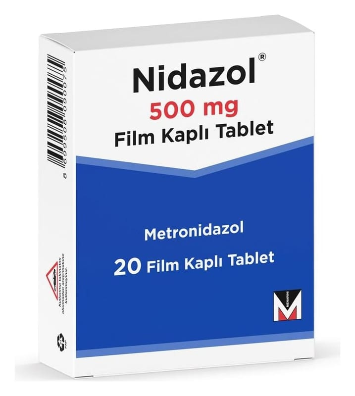

Nidazol 500 mg Film Kaplı Tablet, 20 Adet

Ne için kullanılır
KT · Bölüm 1NİDAZOL 500 mg film kaplı tablet, metronidazol adı verilen bir ilaç içerir. Metronidazol antibiyotik grubuna ait bir ilaçtır. Vücudunuzda enfeksiyona yol açan bakteri ve parazitleri öldürür. Aşağıdaki durumlarda kullanılır: • Kan, beyin, akciğer, kemik, cinsel organlar, mide ve barsak enfeksiyonları • Dişeti ülserleri ve diğer diş enfeksiyonları Bu ilacı kullanmaya başlamadan önce bu KULLANMA TALİMATINI dikkatlice okuyunuz, çünkü sizin için önemli bilgiler içermektedir. • Bu kullanma talimatını saklayınız. Daha sonra tekrar okumaya ihtiyaç duyabilirsiniz. • Eğer ilave sorularınız olursa, lütfen doktorunuza veya eczacınıza danışınız. • Bu ilaç kişisel olarak sizin için reçete edilmiştir, başkalarına vermeyiniz. • Bu ilacın kullanımı sırasında, doktora veya hastaneye gittiğinizde doktorunuza bu ilacı kullandığınızı söyleyiniz. • Bu talimatta yazılanlara aynen uyunuz. İlaç hakkında size önerilen dozun dışında yüksek veya düşük doz kullanmayınız.
• Bacak yaraları ve basınca bağlı gelişen vücut yaraları • Ameliyat sonrası gelişebilecek enfeksiyonların önlenmesi
NİDAZOL 20 tabletlik ambalajlarla piyasaya sunulmaktadır.